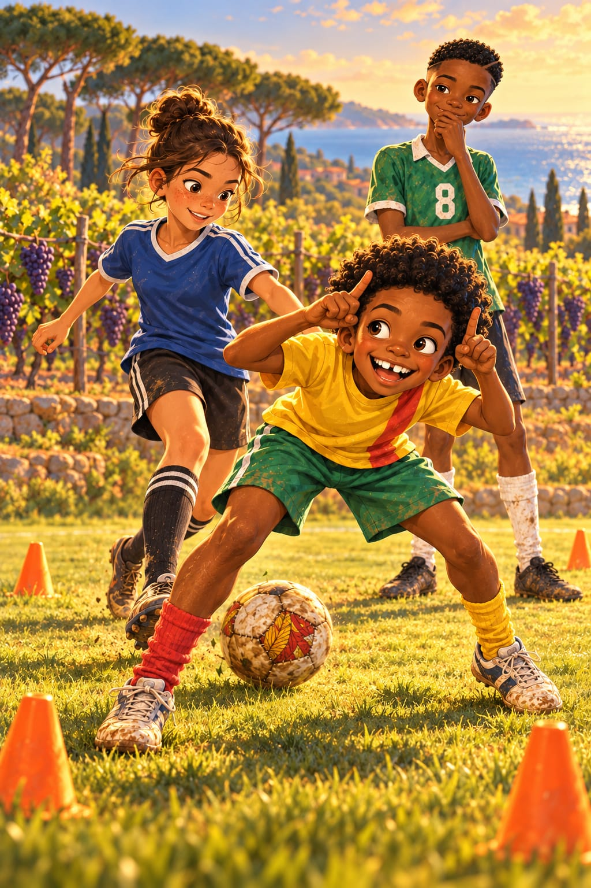
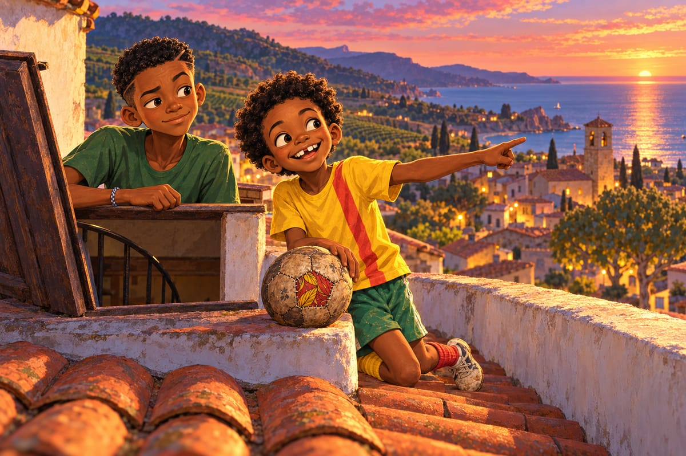
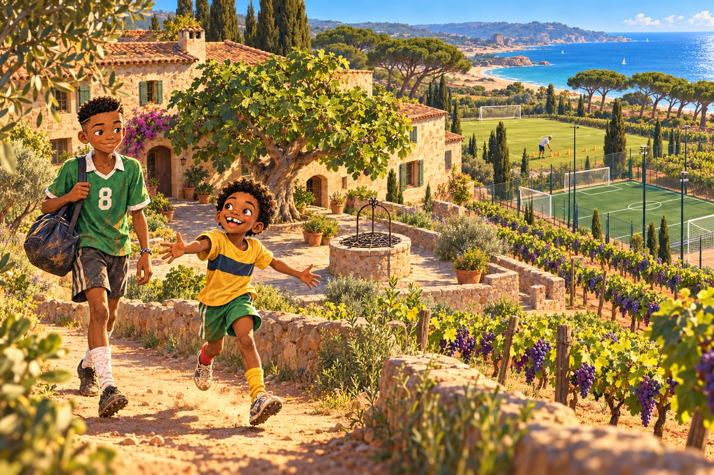
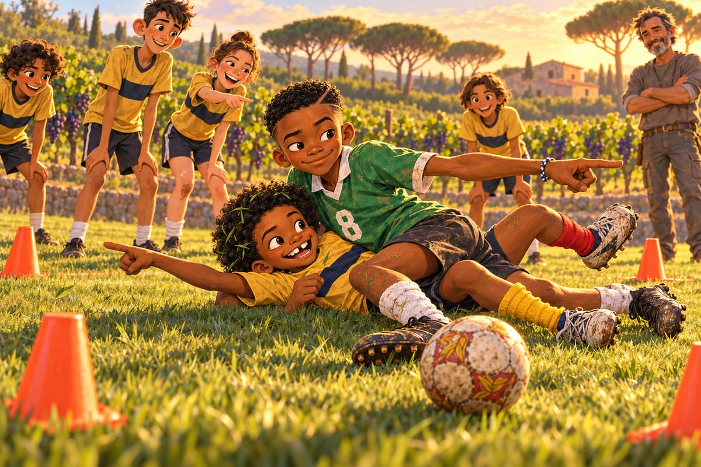

Le taureau

« Bri. Les arbres sont en panne. »
Papa vient de couper le moteur au bout d'une rue étroite qui sent le raisin écrasé. Kaydoudou pose un pied sur le trottoir brûlant, et il ne bouge plus.
Zzzzzzzz.
Dans les pins, dans les buissons secs, dans les deux grands arbres du coin de la rue, quelque chose grésille sans arrêt. Comme si tout le pays était branché sur une prise mal fixée.
« Ce sont des cigales, dit Maman en riant. Des insectes. Elles chantent quand il fait chaud. »
« Elles chantent ? proteste Kaydoudou. Elles font le bruit des beignets dans l'huile de Madame Ekotto ! »
Il les cherche sur les troncs, sous les feuilles, dans les fentes des murs.
« Sortez de là, les cigales ! Je vous entends ! »
Pas une seule.
« Invisibles et bruyantes », annonce-t-il le soir.
« Comme toi la nuit, dit BriBri. On ne te voit pas, mais on t'entend ronfler. »
« Bienvenue à Vinyamar ! dit Papa en ouvrant la porte de la maison. Une colline, des vignes, la mer. Et Tarragone à une demi-heure. »
La maison de la famille est étroite et haute, avec un escalier qui tourne sur lui-même comme une coquille d'escargot. Tout en haut, il y a un toit plat, le « terrat ». Le premier soir, Kaydoudou y monte le ballon de Mami et le pose sur le muret, face à l'eau.
« Regarde, ballon. Ça, c'est la Méditerranée. Tu n'étais jamais venu ici. Là, ce sont les vignes. C'est la saison des vendanges, alors il y a des petits tracteurs pleins de raisins violets, et des guêpes qui les suivent en dansant. Les rues montent et descendent comme des toboggans. Et au bout de chaque ruelle, il y a un morceau de mer. Et tout sent la confiture. »
BriBri passe la tête par la trappe.
« Tu parles à un ballon ? »
« Il vient de Bafoussam. Il est perdu. Je lui explique. »

Le vieux ballon, avec sa pièce de pagne et ses signatures, a l'air d'apprécier la vue.
« Je travaille à Barcelone, raconte Papa le lendemain. Je prends le train qui longe la côte. À Waldorf, je regardais des embouteillages. Ici, je regarde des bateaux. »
Maman colle des petits papiers jaunes partout dans la cuisine.
« Pour l'hôpital de Tarragone, il me faut le catalan. La nevera, le frigo. La finestra, la fenêtre. La porta, la porte. »
Le deuxième matin, Kaydoudou colle un papier jaune dans le dos de son frère : el germà pesat. Le frère pénible. BriBri le porte jusqu'à la boulangerie sans rien remarquer.
« Bon dia ! » dit la boulangère.
« ¡Buenos días ! » dit la vieille dame derrière eux.
« Deux langues, chuchote BriBri. Le catalan et l'espagnol. Et ils changent au milieu des phrases, comme un ailier qui change de pied. »
Génial, pense Kaydoudou. Moi, j'en fais trois.
« Bon dia, mola ! ¿Qué tal ? Un pain, s'il vous plaît. Gràcies, gracias, merci ! »
La boulangère rit si fort qu'elle lui offre une petite brioche couverte de sucre et de pignons. Puis elle lit à voix haute le papier jaune, dans le dos de BriBri.
« Qu'est-ce qu'elle a dit ? » demande BriBri.
« Elle a dit que tu es très gentil », répond Kaydoudou, l'air innocent.
« Tu as vu ? dit Kaydoudou sur le chemin du retour, la bouche pleine. Trois langues, trois fois plus de gâteaux. »
« Ce que tu parles, ce n'est même pas une langue, dit BriBri. C'est du camfranglais avec du catalan et de l'espagnol dedans. Du camfrancatañol. »
Kaydoudou adopte le mot sur-le-champ. Le soir même, il l'enseigne à Mireille par message vocal.
« Mireille ! Nouveau mot ! Camfrancatañol ! Répète après moi ! »
Sur la place du village, il y a une fontaine, une église au clocher carré, la terrasse d'un café et huit platanes immenses. Leur écorce tombe par plaques, et les troncs ressemblent à des cartes du monde.
« Regarde, Bri ! Le Cameroun ! »
« C'est de la mousse. »
« C'est le Cameroun en vert. Toi, tu n'as aucune poésie. »
La Granja del Mar, le centre de formation du Club Esportiu Costa Daurada, est une ancienne ferme au bout d'un chemin de terre, entre les vignes. Kaydoudou saute de la voiture et court partout.
« Bri ! Une grande maison en pierre ! Un figuier ! Un vieux puits avec une grille ! Et là, derrière… un terrain en herbe ! Deux synthétiques ! Et des pins ! Et derrière les pins… » Il s'arrête, la bouche ouverte. « On entend la mer. Depuis le rond central, on entend la mer. Ils ont mis des terrains de foot dans un jardin ! »

L'entraîneur s'appelle Jordi Puig. Les garçons l'ont rencontré la veille, au restaurant de la place, avec Papa. Un homme mince, une barbe poivre et sel, un crayon de menuisier derrière l'oreille. Il parle si doucement qu'il faut se pencher pour l'entendre. Pendant tout le repas, il a dessiné des triangles sur la nappe en papier.
« Pourquoi des triangles ? » a demandé Kaydoudou.
« Parce que le football, c'est des triangles. Tu verras. »
Quand la nappe a été pleine, la serveuse en a apporté une neuve sans rien dire.
« Vous êtes architecte ? » a demandé Kaydoudou.
« No. Soc entrenador. » Puis, dans un français de vacances qui chante un peu : « Entraîneur. C'est pire. »
C'est la fin de l'après-midi. Le soleil, bas et doré, fait briller les raisins violets au bord du terrain. Jordi pose quatre plots orange sur l'herbe en comptant ses pas. Douze d'un côté, douze de l'autre.
« El rondo », dit-il.
Une fille s'avance. Chignon brun, taches de rousseur jusqu'aux oreilles, une cicatrice blanche sur le genou, les chaussettes roulées sur les chevilles.
« Moi, c'est Laia Ferrer. Treize ans. Capitaine de l'équipe féminine, mais chez Jordi, l'équipe est mixte, et il ne veut pas se passer de moi. Ma grand-mère est de Perpignan, alors je parle français. Vite. Suivez si vous pouvez. »
Elle roule les r comme des cailloux dans un torrent. Elle montre un grand garçon maigre aux oreilles décollées.
« Lui, c'est Nil Soler. Défenseur central. Il ne rit jamais, et ses passes, ce sont des lasers. Bon. Le rondo, c'est simple. Quatre dehors, un dedans. Le cercle se passe le ballon en une touche, deux au maximum. Celui du milieu doit le prendre. On l'appelle el toro. Le taureau. »
La main de Kaydoudou jaillit avant qu'il ait réfléchi.
« Moi ! Moi, le taureau ! »
« Un volontaire ! s'étonne Laia. Ça n'arrive jamais. »
Le taureau. Le plus fort. Celui que tout le monde regarde.
Il pose ses deux index sur sa tête comme des cornes. Il gratte l'herbe avec son pied. Il souffle par le nez. Tout le monde rit.
Laia pose le pied sur le ballon, un petit sourire en coin.
« Molt bé, toro. Vine a buscar-la. Très bien, taureau. Viens la chercher. »
Le ballon part.
Tic.
Kaydoudou fonce.
Tac.
Le ballon est déjà de l'autre côté.
Toc.
Il fait demi-tour. Le ballon repart dans son dos.
« Olé ! » crie Laia.
Alors, à chaque passe, tout le cercle crie « Olé ! », et Kaydoudou devient une toupie qu'on fouette à coups d'olés. Il court vers le ballon : il n'y est plus. Il devine : il devine faux. Il plonge, il glisse, il se relève couvert d'herbe.
« Courage, Kaydoudou ! » lance BriBri depuis le cercle.
« Tais-toi et rate une passe ! »
Nil compte les passes à voix basse, sans sourire.
« Deu… vint… trenta… »
À la trente-deuxième passe, Kaydoudou n'en peut plus. Il remet ses index sur sa tête, baisse les cornes, et il hurle :
« Attention, Catalogne ! LA CHARGE DU TAUREAU ! »
Il fonce droit sur Laia en riant comme un fou.
Laia ne bouge presque pas. Elle fait rouler le ballon entre les jambes du taureau. Tranquille. Derrière elle, dans son vieux maillot vert délavé numéro 8, BriBri cache son sourire dans sa main.
« Un petit pont ? À MOI ? Moi qui en ai fait un à Tyler Brooks devant tout le dôme de Potomac Valley ? »
Il se laisse tomber sur le dos, bras et jambes écartés comme une étoile de mer. Et il éclate de rire. Il rit tellement qu'il a mal au ventre. Les autres rient aussi, mais avec lui, pas contre lui.
Nil lui tend la main pour le relever.
« Trenta-dos », dit-il simplement.
« Trente-deux, traduit Laia, ravie. Bienvenue au club, taureau. »
Dans le cercle, BriBri joue comme il joue toujours. Proprement. Il reçoit, il contrôle, il regarde, il passe. Deux touches, bien appliquées.
« Massa temps, BriBri, murmure Jordi. Trop de temps. »
BriBri fronce les sourcils, veut aller plus vite, hésite une fraction de seconde. Kaydoudou n'a plus rien à perdre. Il se jette dans ses pieds. Le ballon roule hors du carré.
Le seul ballon que Kaydoudou récupère de toute la séance, il le prend à son propre frère. Il fait la danse de Roger Milla autour d'un plot.
« Pardon, Bri. Enfin, non. Pas pardon du tout. »
BriBri entre au milieu avec la tête d'un roi qu'on vient de chasser de son trône.
« Ce n'est pas fini, Kaydoudou. »
Mais dans le cercle, Kaydoudou découvre un autre problème. Personne ne lui passe le ballon.
« Ici ! Je suis là ! Hé ! Je suis là, je vous dis ! »
Jordi vient se placer derrière lui, sans bruit.
« Si el toro està entre tu i la pilota, no existeixes. »
« Si le taureau est entre toi et le ballon, tu n'existes pas », traduit Laia.
Kaydoudou ouvre grand la bouche. Tonton Fokou a dit presque la même chose, deux ans plus tôt, dans la boue de Bonamoussadi.
Les entraîneurs du monde entier s'écrivent des lettres en cachette, ou quoi ?
Son frère est au milieu, juste entre lui et le ballon. Kaydoudou est caché dans son ombre. Il fait deux pas de côté.
Le ballon arrive aussitôt dans ses pieds.
« Tu existes ! » lui crie Laia.
« J'existe ! » hurle Kaydoudou, et il remet le ballon en une touche.
Ensuite, Jordi passe au cinq contre deux et met les deux frères au milieu, ensemble. Une catastrophe magnifique. Quand ils attaquent, les frères se comprennent sans un mot. Mais quand ils défendent, ils courent vers le même ballon et se rentrent dedans comme deux chèvres têtues.
Bonk.
« Un a l'esquerra, un a la dreta ! » souffle Jordi.
« Un à gauche, un à droite ! » traduit Laia.
La troisième fois qu'ils se retrouvent par terre, l'un sur l'autre, même Nil sourit.

« C'est ton côté », souffle Kaydoudou sous son frère.
« Non, c'est le tien. »
« Il a souri ! crie Laia. Nil a souri ! Jordi, notez la date ! »
À la fin de la séance, Jordi les réunit à l'ombre des pins. Il s'arrête devant Kaydoudou.
« Dotze anys. Douze ans. Normalement, à ton âge, tu joues avec les plus jeunes. » Il montre BriBri avec son crayon. « Mais quand vous attaquez, ton frère et toi, vous parlez sans parler. Alors tu restes ici, avec les grands. Surclassé. »
« Encore ! s'écrie Kaydoudou. Je suis le plus petit de trois pays ! »
Jordi sourit et trace un triangle dans le sable avec la pointe de sa chaussure.
« El rondo no és un joc. És una escola. Tot el futbol és aquí dins. » Il cherche ses mots français. « Le rondo, ce n'est pas un jeu. C'est une école. Tout le football est dedans. »
Kaydoudou est encore assis par terre, de l'herbe dans l'afro, la chaussette rouge tombée sur la cheville droite, la jaune remontée jusqu'au genou. Il lève la main, comme en classe.
« Alors moi, je vais devenir le meilleur élève de l'école. Le meilleur du rondo. Un jour, c'est moi qui ferai courir le taureau. Je le jure sur ma chaussette rouge et sur ma chaussette jaune. »
Laia le regarde de haut en bas, avec son sourire en coin.
« Si vols aprendre de veritat, vine diumenge a la plaça, després de missa. » Elle se penche vers lui. « Si tu veux vraiment apprendre, viens dimanche sur la place, après la messe. Les vieux vont te faire pleurer. »
« Les vieux ? »
Kaydoudou se tourne vers son frère. BriBri hausse les épaules.
Dans les pins, les cigales invisibles rient de plus belle.